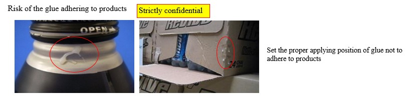
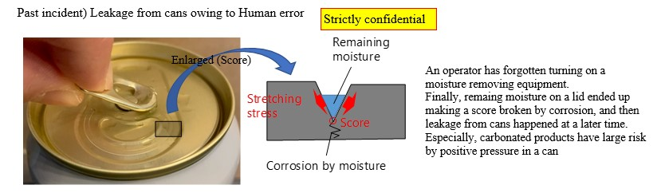

| Defect mode | Different packaging / Packaging appearance defect / Lack of products in secondary packaging / BBD coding defect / Others |
| Subjected packaging | All packaging |
| Subjected line | All lines |
To print the best before date according to the laws and regulations.
◆The correct number of products must be packed (Example: Introducing sensors to count the products, conveyor control to secure a sufficient number of products, etc.). |
||
◆Pack products without damage to them or foreign material contamination. |
||
◆Print the best before dates on carton/shrink packs according to the laws and regulations (For details, see the description about printing in 1.3.16.). |
||
◆Remove products in the equipment automatically or manually when it makes an unplanned stop. |
||
◆Standardize how to perform visual inspection, key points for inspection, and reinsert location when re-packing products removed at an unplanned stop of the equipment. |
||
◆For shrink packs, verify in advance that the temperature, pressure, and spray position/direction of steam or hot air for each packaging type and each product type and standardize their setting values. |
||
・The packing strength must not be too low to prevent a load collapse. It also must not be too high to prevent the deformation of bottle necks. |
||
◆Carton packing must meet the standards for strength that withstands the impact of stacking or distribution and for the packing strength and adhesion strength specified in consideration of unpackability for customers. |
||
◆For carton packing, verify the melting temperature, discharge location/timing, and adhesion time of the adhesive in advance and standardize their setting values. Also, make sure that the adhesive does not stick to products. See the background. |
||
◆It is desirable to understand the characteristics of each adhesive (Example: Allowable range of open time and contact time according to outside temperature, scorching risk according to melting temperature) and choose an appropriate adhesive. |
||
Task 1 |
 |
|
| Procedure | Make sure that packaging is correct before installing it in the equipment (Example: Checking printed information and packaging code. (See 1.3.9.1 "Check before using packaging".) | |
| Frequency or timing | Every time packaging is used | |
| Operating limit or standard condition | The packaging code shown in the used packaging must match the packaging code specified in the production order sheet. | |
| Task 2 |
||
| Procedure | Perform visual inspection for shrink packs. | |
| Make sure that the barcodes of shrink packs can be read. | ||
| Frequency or timing | Set locally (Example: At start, every two hours) | |
| Operating limit or standard condition | The printed information must be correct. No holes or primary packaging deformation. (Or comply with the standard values if they are set in the packaging specifications.) | |
| Task 3 |
||
| Procedure | Measure the packing strength and adhesion strength and perform visual inspection for carton packs. (Example: Printed information on packaging, no adhesive dripping from carton packs, etc.) | |
| Sample cartons, unpack them, perform product visual inspection, and record the results (Example: No adhesive sticking, dents, damage, etc.). | ||
| Clean paper dust around the equipment. | ||
| Frequency or timing | Set locally (Example: At start, every two hours for one carton) | |
| Operating limit or standard condition | Set locally (Or comply with the standard values if they are set in the packaging specifications.) | |
|

|
| Defect mode | Sealing defect / Packaging appearance defect |
| Subjected packaging | All packaging |
| Subjected line | All lines |
◆Install a water drop remover as necessary. |
||
◆Validate the water drop removal effects of the water drop remover for each product in advance. |
||
◆Specify conditions for the water drop remover based on the validation results (Example: Number of air nozzles, position, direction, air pressure). |
||
◆Make sure that removed water drops do not reattach to products or are not splashed on the surrounding area (Example: Vacuuming water drops while covering the surrounding area). |
||
◆Standardize the operation so that the correct water drop removal settings specified for each product or packaging can be selected when SKU is changed. |
||
◆Standardize the operation to prevent workers from forgetting to turn on the water drop remover. See the background. |
||
・To prevent workers from forgetting to turn on the water drop remover, it is desirable that it should automatically start/stop in unison with the conveyor start/stop. See the background. |
||
| Task 1 |
||
| Procedure | Make sure that the water drop remover is running appropriately and record it in the check sheet. | |
| Frequency or timing | Before starting production | |
| Operating limit or standard condition | The water drop remover must be running. | |
| Task 2 |
||
| Procedure | Make sure that no water drops are attached on the products after casing or shrink-packing. | |
| Frequency or timing | Same timing as product visual inspection after unpacking cases or shrink packs | |
| Operating limit or standard condition | No water drops on products | |
|

|